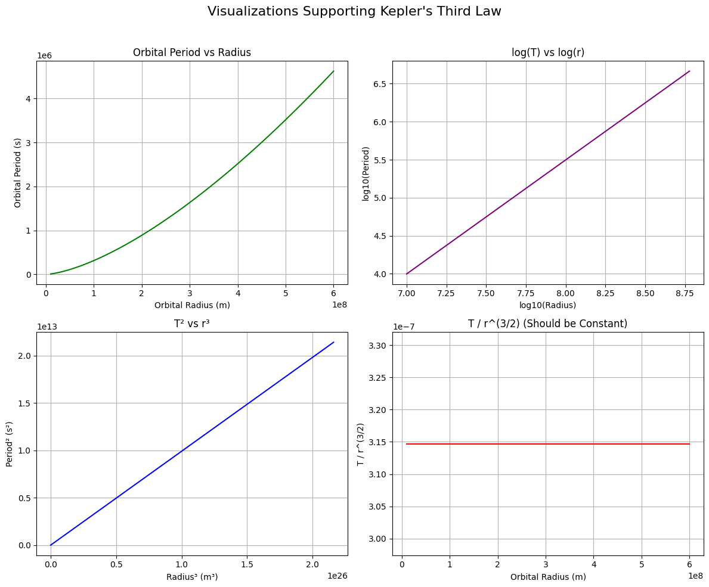

Kepler’s Third Law: Orbital Period and Radius
1. Deriving the Relationship (Kepler’s Third Law)
Let’s consider a body (like a satellite or a moon) moving in a circular orbit around a planet.
The gravitational force provides the centripetal force:
Where:
- \(G\) is the gravitational constant
- \(M\) is the mass of the central body (e.g. Earth)
- \(m\) is the mass of the orbiting object
- \(r\) is the orbital radius
- \(v\) is the orbital velocity
Simplifying:
Now use the relation between velocity and orbital period \(T\):
Substitute this into the gravity equation:
Now solve for \(T^2\):
✅ Conclusion: $$ T^2 \propto r^3 $$
This is Kepler's Third Law for circular orbits.
2. Implications in Astronomy
- Planetary Mass Estimation: By measuring \(T\) and \(r\), we can solve for \(M\), the mass of the central planet or star.
- Distance Calculation: If we know the orbital period, we can estimate the orbital radius and vice versa.
- Satellite Orbits: Engineers use this law to design satellite orbits for GPS, communications, and weather observation.
3. Real-World Example – The Moon’s Orbit
- Distance from Earth: \(r \approx 3.84 \times 10^8 \, \text{m}\)
- Earth's mass: \(M = 5.972 \times 10^{24} \, \text{kg}\)
Using:
Which matches the Moon’s actual orbital period.
4. Simulation and Visualization (Summary)
A Python script was used to:
- Simulate circular orbits
- Plot \(T^2\) versus \(r^3\), showing a straight line (confirms Kepler's Law)
- Compute real orbital periods
5. Extension to Elliptical Orbits
For elliptical orbits, replace \(r\) with the semi-major axis \(a\):
Where:
- \(M\) and \(m\) are the masses of the two bodies
This version works for binary stars, exoplanets, and even galactic orbits.
Additional Visuals for Kepler's Third Law
fig, axs = plt.subplots(2, 2, figsize=(12, 10))
1. T vs r
axs[0, 0].plot(radii, periods, color='green') axs[0, 0].set_title("Orbital Period vs Radius") axs[0, 0].set_xlabel("Orbital Radius (m)") axs[0, 0].set_ylabel("Orbital Period (s)") axs[0, 0].grid(True)
2. log(T) vs log(r)
axs[0, 1].plot(np.log10(radii), np.log10(periods), color='purple') axs[0, 1].set_title("log(T) vs log(r)") axs[0, 1].set_xlabel("log10(Radius)") axs[0, 1].set_ylabel("log10(Period)") axs[0, 1].grid(True)
3. T^2 vs r^3 (Already seen)
axs[1, 0].plot(radii_cubed, periods_squared, color='blue') axs[1, 0].set_title("T² vs r³") axs[1, 0].set_xlabel("Radius³ (m³)") axs[1, 0].set_ylabel("Period² (s²)") axs[1, 0].grid(True)
4. T/r^(3/2) ratio check
ratio = periods / (radii ** 1.5) axs[1, 1].plot(radii, ratio, color='red') axs[1, 1].set_title("T / r^(3/2) (Should be Constant)") axs[1, 1].set_xlabel("Orbital Radius (m)") axs[1, 1].set_ylabel("T / r^(3/2)") axs[1, 1].grid(True)
plt.suptitle("Visualizations Supporting Kepler's Third Law", fontsize=16) plt.tight_layout(rect=[0, 0, 1, 0.96]) plt.show()
 https://colab.research.google.com/drive/14qjrhSdrlgkpfu0Lel1x9ZVsAqHItlZg?usp=sharing